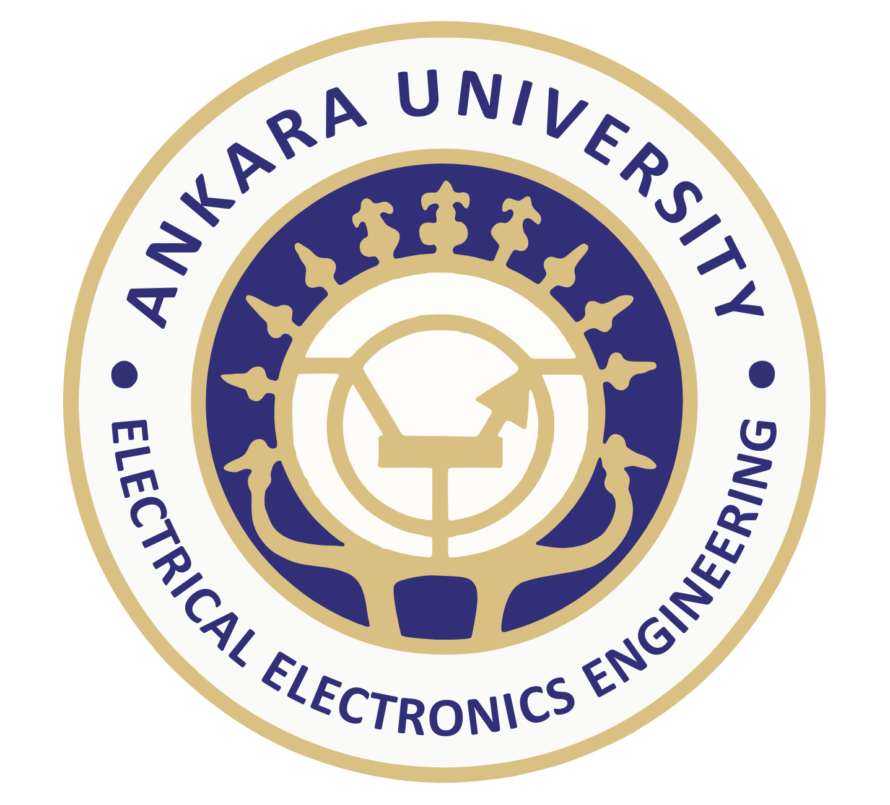

Ankara Üniversitesi Elektrik-Elektronik Mühendisliği Bölümü 1989 yılında kurulmuş olup, her yıl lisans programına yaklaşık 50 öğrenci ve lisansüstü programına yaklaşık 30 öğrenci kabul edilmektedir. Bölümümüzde başlıca araştırma alanları; sayısal işaret işleme, görüntü işleme, kontrol, optoelektronik, haberleşme, elektrik tesisleri ve projelendirmesi ile elektromanyetik konularını kapsamaktadır. Bölümümüzde lisans eğitiminde kullanılmak üzere bilgisayar destekli 12 farklı laboratuvar ve yüksek hız internet bağlantılı birçok kişisel bilgisayar bulunmaktadır. Programdan mezun olabilmek için öğrencilerin 30 iş günü stajı başarıyla tamamlamaları gerekmektedir. Programdan mezun olanlar Elektrik-Elektronik Mühendisliği Lisans derecesi ve Elektrik-Elektronik Mühendisi unvanı almaya hak kazanırlar. Lisansüstü öğrenciler; Robotik Araştırma Laboratuvarı, Sinyal İşleme ve Haberleşme Araştırma Laboratuvarı, Kestirim, İzleme ve Füzyon Araştırma Laboratuvarı, Görüntü İşleme Araştırma Laboratuvarı, İstatistiksel Sinyal İşleme Araştırma Laboratuvarı, Nümerik Metotlar ve Optimizasyon Araştırma Laboratuvarı ile Optoelektronik ve Fotonik Araştırma Laboratuvarında çalışmalar yapabilmektedirler. Bölümümüzde, mezunlarımızın iş hayatlarında kendilerini başarıya ulaştıracak donanıma sahip olmalarını sağlayan bir program yürütülmektedir. Öğrencilerimize uzmanlık alan derslerinin yanı sıra matematik, fizik, kimya, sosyal bilimler, güzel sanatlar, ekonomi bilimleri gibi temel bilimlerde bilgi kazandırılmaktadır. Bu doğrultuda öğrencilere, gelişen teknolojiyi hızla takip edebilme, takım çalışması, etkili iletişim ve yenilikçi düşünme yeteneklerini geliştirecek biçimde, ders ve projelerin yanı sıra sosyal içerikli faaliyetler için olanaklar sunulmaktadır. İş hayatında karşılaşılacak sorunların ve bunlarla ilgili çözüm yaklaşımlarının deneyimlenmesi için proje geliştirme, planlama ve yürütme faaliyetlerine önem verilir. Mezunlarımız; elektronik ve bilişim teknolojilerinin üretildiği, bakımının yapıldığı ve pazarlandığı yurtiçi ve yurtdışı özel sektör ve kamu kuruluşları ile araştırma merkezlerinde çalışabilmektedirler. Yapılan işler; Planlama-Proje, Araştırma ve Geliştirme-Tasarım, Üretim/Yapım, İşletme-Bakım-Onarım-Teknik Destek, Eğitim ve Öğretim, Yönetim, Satış ve Pazarlama ana başlıklarında toplanabilir. İstihdam için Veri İletişim Teknolojileri ve Sistemleri, Radarlar ve Sistemleri, Mikrodalga Elektroniği ve Sistemleri (Teknikleri), Endüstriyel Elektronik, Elektronik Devre Tasarım ve Üretimi, Bilgisayar ve Bilgisayar Sistemleri, Bilgisayar Yazılımcılığı, Robot ve Robot Teknolojisi (Mekatronik), Tıbbi Elektronik (Biyomedikal Elektronik), Proje/Yazılım Sistem Yönetim Mühendisliği konuları başlıca iş olanakları sunan alanlardır.